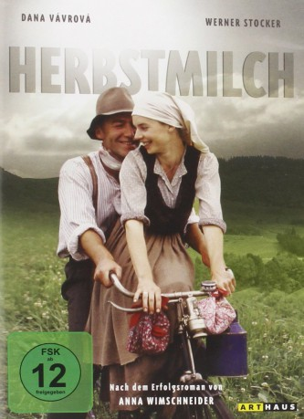
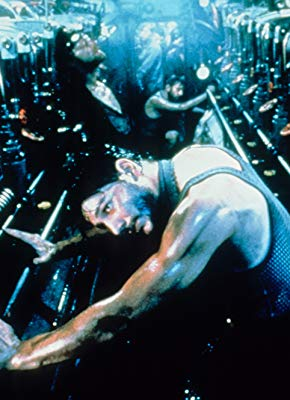

#10697 Herbstmilch
 
 IMDB-Wertung: 6.9 / 10
IMDB-Wertung: 6.9 / 10  Metascore: 0
Metascore: 0 
This is a cinematic adaptation of the autobiography of Anna Wimschneider. It depicts her life's experiences and workaday routines as a woman born on a farm in lower Bavaria, Germany, in the 1920s. Anna's mother died early in child-bed and since then Anna had to take her place and work very hard. On a Nazi rally she meets young Albert, who owns a farm. They realize that they both don't believe into fascism, and go off for a coffee bar, where he starts wooing her. Against her prior decision to leave the farm-life as soon as possible, she agrees to marry him, in the hope that her life will become easier on Albert's farm.
Jahr: 1989
Dauer: 105 Minuten
FSK: 12
Land: West-Deutschland Studio: Senator FilmTonspuren:
Untertitel:
Auflösung: 720p (1280x696) Größe: 4055 MB
Genre: Drama, Krieg
Regisseur: Joseph Vilsmaier
Drehbuch: Willi Segler, Peter F. Steinbach, Anna Wimschneider
Soundtrack: Enjott Schneider
Darsteller:
- Dana Vávrová als Anna Wimschneider
- Werner Stocker als Albert Wimschneider
-  Claude-Oliver Rudolph als Official
 Eva Mattes als Photographer
Eva Mattes als Photographer- Karel Hermánek als
- Philipp Moog als
- Ilona Mayer als Resl
- Herta Schwarz als Aunt
- Renate Grosser als Mother-in-Law
- Julius Mitterer als Uncle Otto
- Albert Wimschneider als Uncle Albert
- Marie Bardischewski als Mother
- Werner Schnitzer als Driver
- Klára Lidová als
- Waltraud Ludwig als
- Hans Schuler als
- Tonja Noss als
- Birge Schade als
- Alfons Scharf als
- Hannes Andersen als
- Joachim Schweizer als
- Stephan Glaser als
- Georg Hackl als
- Anton Feicht als
- Renate Muhri als
- Elisabeth Zissler als
- Engelbert Fuchsgruber als
- Rosa Schaetzel als
- Ferdinand Schuster als
- Berta Fuchsgruber als
- Leo Speer als
- Edeltraud Pichel als
- Eric Bichlmeier als Child
- Andreas Bucher als Child
- Josef Greiler als Child
- Lorenz Hartwig als Child
- Marco Klinger als Child
- Sascha Luebecke als Child
- Alexander Noneder als Child
- Miriam Gramelsberger als Child
- Sebastian Pollozek als Child
- Dominik Sikora als Child
- Florian Griebel als Child
- Janina Vilsmaier als Child
- Ferdinand Gratz als Child
- Tobias Gratz als Child
- Anna Wimschneider als Herself
Datei: X:\1989\Herbstmilch (1989, FSK12, 1280x696).mkv seit 22.02.2019
Festplatte: HD 1987-1991
 Es gibt insgesamt 54 Filme in der Gruppe '1989'
Es gibt insgesamt 54 Filme in der Gruppe '1989'